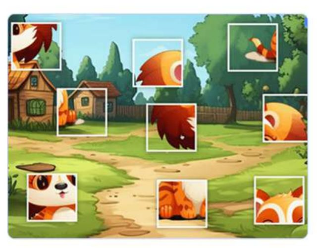
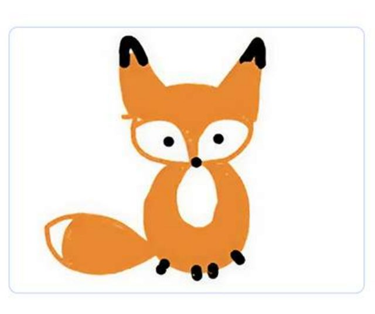
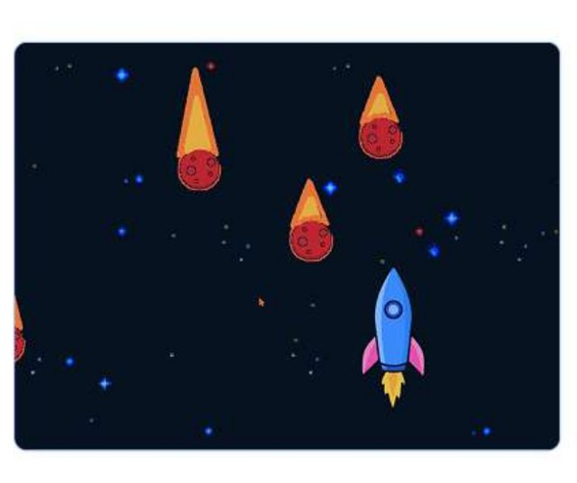

0Ringkasan Kursus
Membantu siswa memperoleh keterampilan literasi komputer (menggunakan keyboard dan mouse, memahami komputer pribadi, browser, dan dasar-dasar keamanan internet), serta menguasai alat kreativitas digital, membentuk keterampilan dasar pemrograman blok, dan mengembangkan berpikir kreatif dan kritis.
🏆 Project yang Dihasilkan Siswa
Sepanjang kursus, anak-anak membangun beberapa proyek kreatif nyata yang bisa mereka tunjukkan ke orang tua:


1Alat & Persyaratan Perangkat
🧰 Program yang Digunakan
💻 Persyaratan Perangkat Keras
🖱️ Laptop atau komputer, keyboard dan mouse
🌐 Koneksi internet stabil minimal 10 Mb/dtk
💾 RAM 4 gigabyte
🧭 Browser Google Chrome terinstal
📹 Zoom terinstal
🖥️ Sistem operasi: Windows 10+, Mac OS X 10.9, 10.10, 10.11, dan lebih tinggi
Verifikasi perangkat siswa sesuai daftar di atas saat pemeriksaan awal sesi. Perangkat yang tidak memenuhi syarat adalah penyebab paling umum gangguan teknis di 10 menit pertama.
2Delapan Modul Kursus
Kurikulum ini tersusun dari delapan modul berurutan. Setiap modul membangun di atas keterampilan modul sebelumnya sambil mengenalkan alat atau konsep baru. Klik tiap modul untuk melihat penjelasan lengkap — kenapa penting, apa yang dikuasai anak, dan yang perlu Anda kuasai sebelum mengajarkannya.

🖱️ Menjelajahi Dunia Digital
Mouse, keyboard, grafis komputer, algoritma pertama, GIF, dan melodi.
🧩 Perjalanan ke Dunia Pemrograman
Urutan, perulangan, dan logika lewat teka-teki dan platform petualangan.

🗂️ Petualangan di Lembah Data
Struktur file, internet, browser, mengolah foto, komik, dan poster.
🎨 Pencipta Tekno
Animasi pertama di Scratch Junior, plus menulis dan mengedit di Google Docs.
🕹️ Cyber-Power
Membuat game sendiri di Scratch Junior, lalu stiker dan desain di Canva.

🚀 Dari Animasi ke Dunia Permainan
Animasi di Brush Ninja jadi video nyata, lalu game baru yang lebih kompleks.

🎵 Cyber-Creators
Keamanan internet, presentasi warna-warni di Slides, dan musik digital.
🎓 Petualangan Akhir
Matematika dasar di Google Sheets, tinjauan besar, dan portofolio digital.